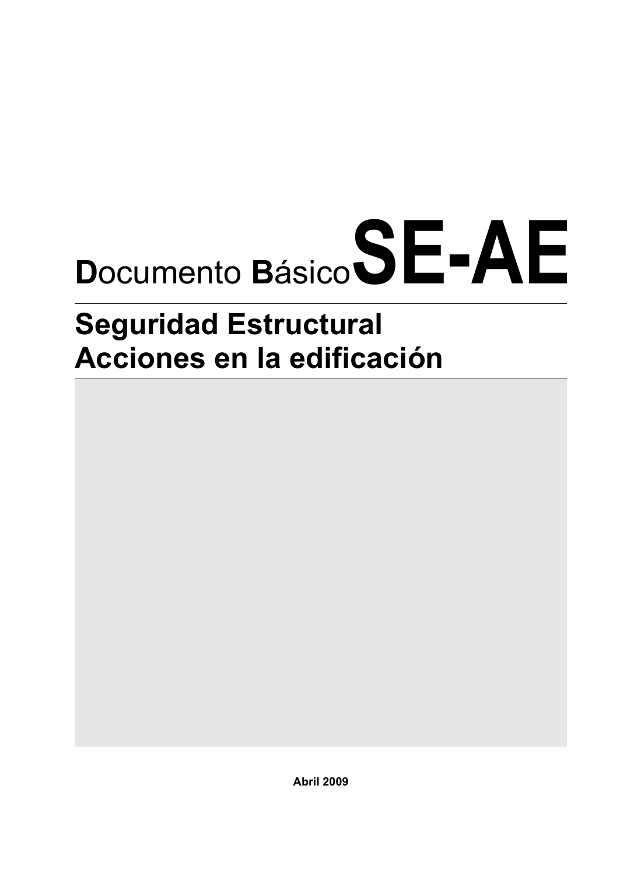

DB-SE-AE · Página 1 · versión 2009-04
SHA256: 26116e5088955f0c6963a6187270cad282e1e7bf5a53a90f695c8fa50b4e4487 · página física 1 de 46 · métodos de encabezado
solo si están cotejados.
Formatos: Markdown · JSON de bloques · PDF p. 1 · imagen PNG
Abril 2009 Documento BásicoSE-AE Seguridad Estructural Acciones en la edificación
